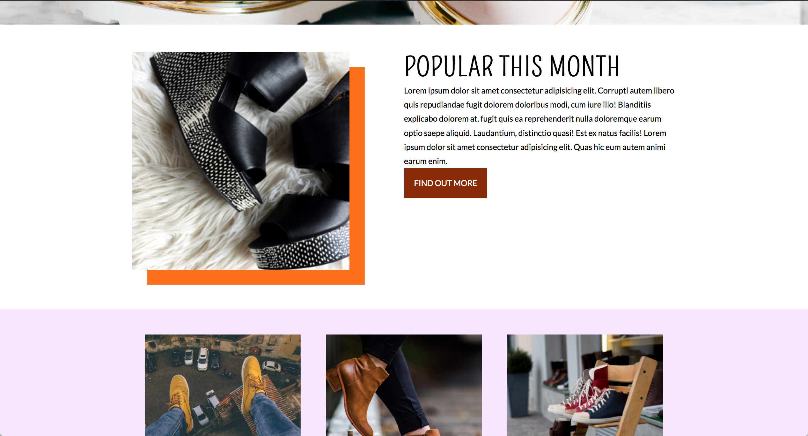
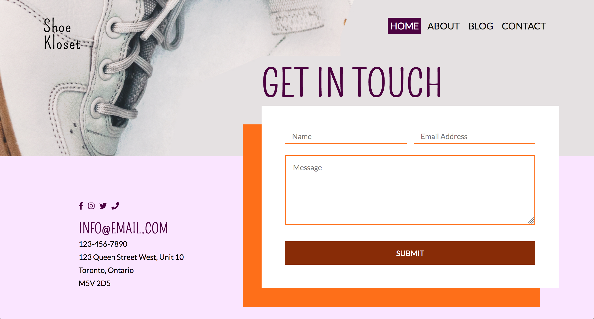

I was given a desktop PSD version of this site, and converted it into a live, accessible, responsive website. I was given brand colours and fonts to use. The site contains a main homepage, blog page, and contact page that all link to each other.
This was created using SCSS, flexbox and grids.



Next Steps
- - Undergo more accessiblilty testing
- - Make mobile version more clean